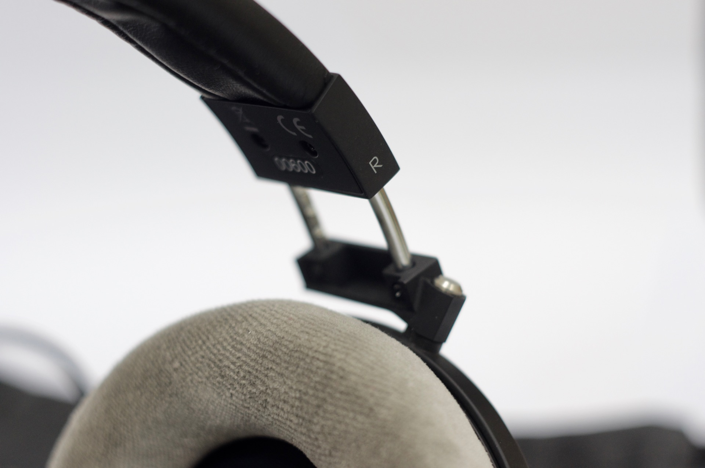

Fostex 和 Massdrop 合作的而出品的 TH-X00 系列算是補足了很多人想要重溫 Denon D 系列又買不下 TH-900 的需求。另我意外的是一直到 TH-X00的出現我才知道fostex 一直以來都幫 Denon 代工各種產品。由於 Massdrop 一直以團購募資合作為特色，所以借 Fostex 合作的機會不只重現原本 D 系列木殼外觀，另外還衍生出Mahogany（桃花心木）/ purple heart （紫心木）/ Ebony （黑檀木）等等版本。而我這次跟到的是紫心木的版本。
就外觀做工來說絕對誠意十足，耳機本體支架（黑色部分）以及轉軸部分都是採用鋁鎂合金打造，所上的黑漆十分平均，調整鬆緊的機關阻抗以及段落感十分精準，撇開稍稍廉價的外包裝，耳機製作上沒有感受到一絲馬虎。

TH-X00 不只在外型上亮眼，在單體上採用超過 1 tesla 的磁石迴路，響應頻率落在 5–45,000 Hz，在規格上不偏不移剛好落在 TH-600 和 TH-900 中間，阻抗僅 25 ohms。由於採用半開放式設計，所以即使看起來像是封閉式的，實際聆聽還是會露出不少音。
不過耳機最重要還是拿來聽，當我剛拿到的時候當時我和手邊的 Ultrasone Pro2900 和 Beyerdynamic DT990 比較。初次聆聽的經驗十分之差。音場狹小，人聲和低頻混在一起變得又肥又厚，真的蠻失望的。網路上爬一下文以後，發現不少人說，換掉耳罩以後就可以改善很多，於是就決定來做個小實驗。
仔細觀察一下不難發現，TH-X00 在耳罩的設計和其他耳機並不相同，由於為了貼合佩帶舒適，在靠近耳廓的部分比較厚，並且開口並沒有對其正中央。把 TH-X00 翻到背面可以看到開口以外的部分都被白色塑膠擋住，並且由於耳罩本身是皮質的，所以聲音就被侷限在橢圓的開口。如果和 DT990 耳罩得背面相比就可以看到明顯的差異，DT990 在耳罩上面開了非常多的小圓孔，讓一部分的聲音可以傳過絨質的耳罩達到調音的效果，這一部分造就 DT990 大氣的音場。就單體特寫的地方可以看到，單體外環的海綿下有讓背後腔體相通的開孔，這樣的做法可以讓接觸到木殼反射的低頻通過，這在 Pro2900上面也有類似的設計。因此我推測 TH-X00 耳罩開口大幅影響到整體的表現，其實仔細調查同樣工業設計的 TH-900 採用的耳罩的開孔也是圓型的。
我首先換上 DT990 的耳罩測試，最初的聽感就是，原本詭異的音場回歸正常，中低頻終於不會擠在一起，不過伴隨著也讓人聲厚度變扁了許多，高頻也變刮耳，這樣的改造解決了一部分的問題，不過還是不是很好的體驗。於是我換上 Pro2900 的耳罩進一步實驗，這一次聆聽不禁嘴角上揚，雖然音場微微縮小，但是高頻不刮耳了，人聲韻味也回來了不少，低頻的Q度也適中，推測應該是因為 Pro2900 的耳罩背面並沒有做開孔。唯一的缺點就是 Pro2900 耳罩的直徑和 TH-X00 差太多了，所以即使我硬把他黏在原本 TH-X00 的墊片上面還是不合。所以我就上網查一下有沒有是天鵝絨材質，背面沒有開孔且直徑和 TH-X00 差不多。最後選用了AKG K701 的耳罩，換上後幾乎就是我要的聲音，另外比較特殊的地方是他的耳罩雖然是圓的，但是靠近耳廓的地方還是比較厚，戴起也比較舒適。這裡小小分享我是怎麼黏到TH-X00的墊片上，當時在做黏合的時候位考量到以後可能要替換，所以並不打算使用三秒膠，但是使用普通的雙面膠卻是怎麼要都黏不起來，所以最後採用 3M-Scotch 的塑膠專用雙面膠才解決。
總結一下我對修改後的 TH-X00 的感想，就做工上面幾乎是無可挑剔，不過網路上似乎有傳出由於包裝泡膜在木殼的亮光漆上留下痕跡的災情，不過事後 Massdrop 有另外寄出免費拋光套件，算是積極在處裡後續的問題。在聲音上，除了人聲稍稍單薄以外，解析拜超過 1 telsa 的磁石迴路所賜十分出色，金屬樂器的光澤以及弦樂撥弦前的氣勢都能完整被轉譯出來，強烈建議有入手 TH-X00 的人購入 TH-900的替換耳罩，或是換成其他類似耳罩來解放 TH-X00 的實力。最後真要挑缺點，就是耳罩本身的重量不小，第一次長時間戴覺得脖子頗痠。